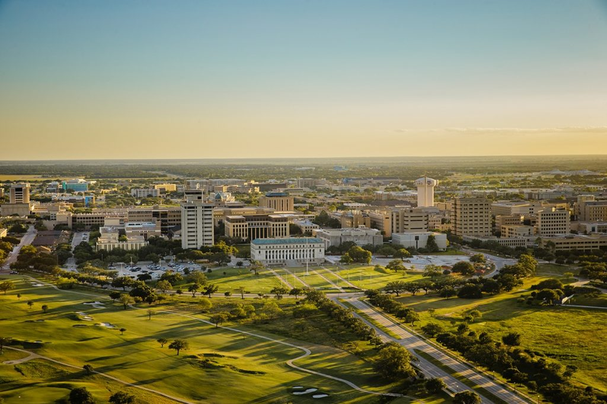

- I am a Junior Computer Engineering student at Texas A&M University.
- I have moved around a lot throughout my life, but I currently live in Austin, Texas.
- I was born in Seattle, Washington, moved to India when I was 4 years old, and came to Texas when I was 18.
- I love travelling, reading, watching movies and TV, coffee, music, and playing sports.
- My passion is Computer Engineering. I have been interested in software development and all kinds of electronics for as long as I can remember.